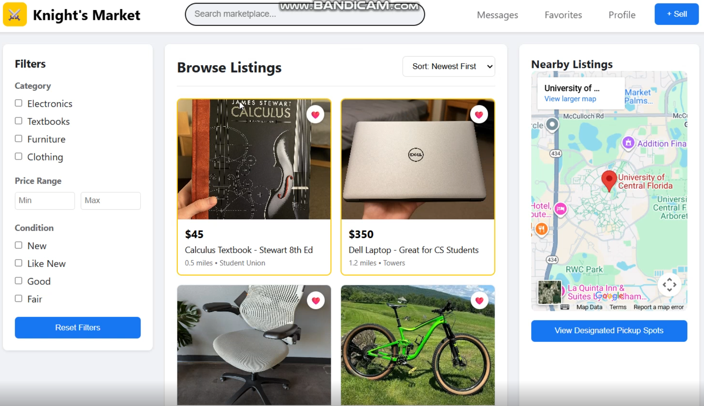

Image
Description
This was a project done in CAP3104, and my group made a UCF Student-only alternative to services like Facebook Marketplace. We created a website for this purpose, and went through developing requirements, testing, and user research.
Skills Learned
- User Research - Valuable experience was gained letting users go through the website, and collecting feedback.
- Developing Requirements - Figuring out everything we needed for a functional Marketplace website was something I did not have experience in beforehand.